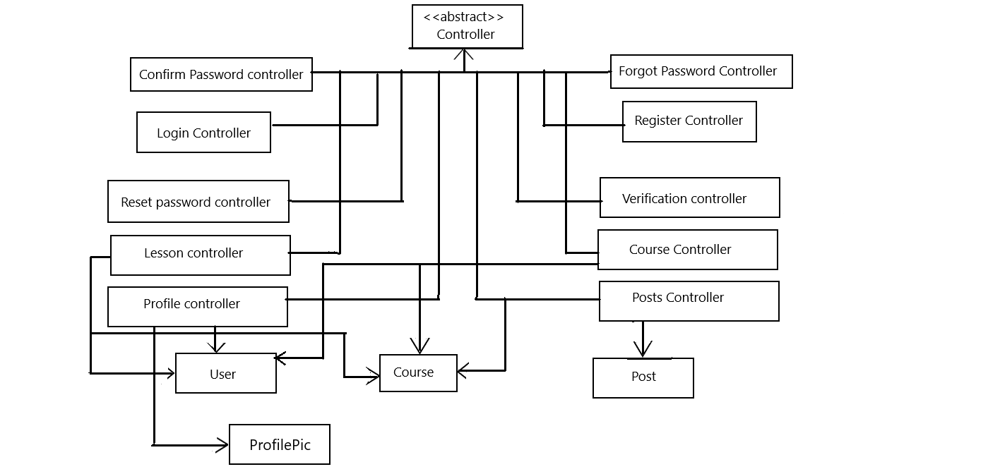
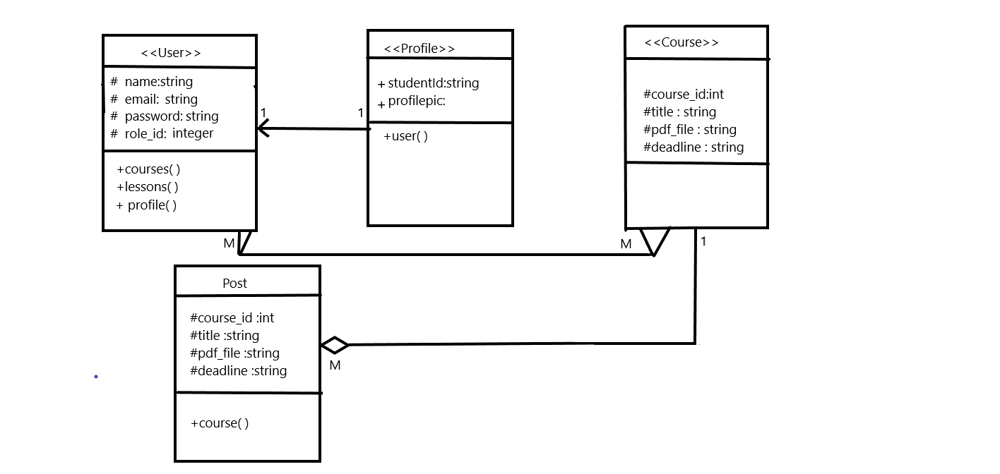
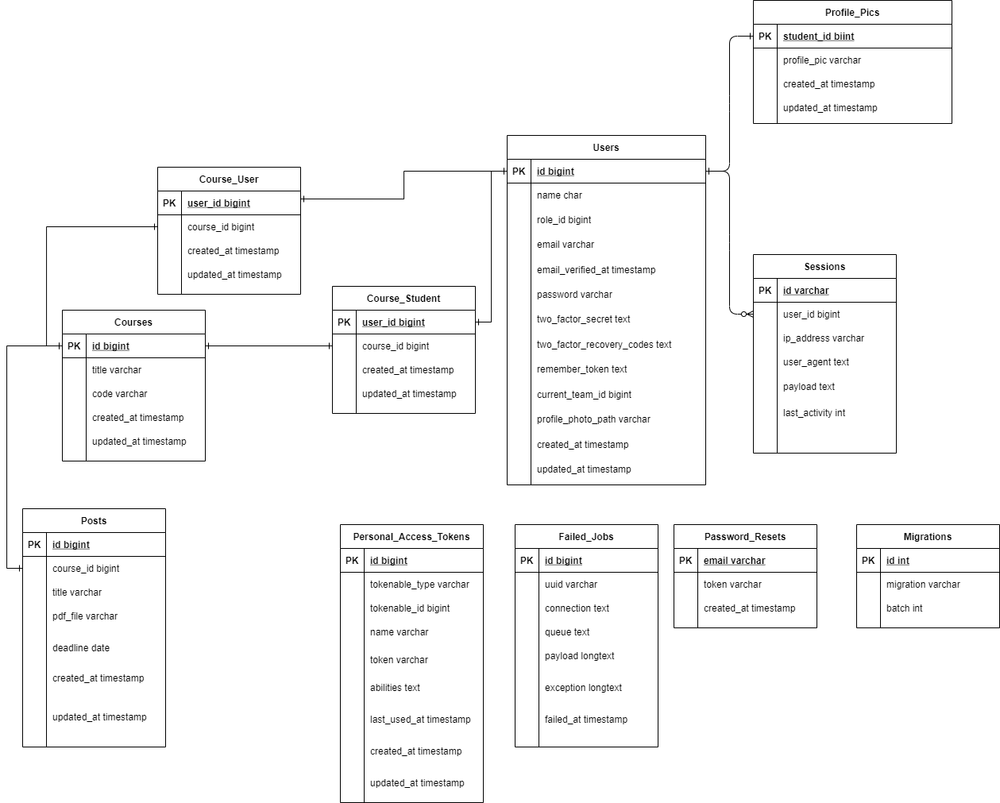

Revision History
| Name |
Date |
Reason For Changes |
Version |
| First Publication |
August 18 , 2021 |
|
v1.0 |
| Second Publication |
September 13, 2021 |
Database models and libraries updated |
v2.0 |
1.1 Purpose
The purpose of this document is to describe the design and implementation details of the "Reading Progress App"
system. The software design is derived from the functional and non-functional requirements detailed in the
software requirement specification for the project, as well as design constraints and any other external factor
provided in the document. This document is intended mostly for people involved with the development of the system.
It describes the whole system, and which will be released in its 2.0 version very soon.
1.2 Intended Audience and Reading Suggestions
This document is mostly intended for developers, project managers, testers, and documentation writers. The rest of
the SDS consists of the overall design of the product, including its class diagrams and high-level component
designs, as well as the database design and the implementation plan for the system. It would be best to begin with
the description of design components, then to the overall database design and high-level component designs, then
to the remaining description of those sections.
This document was created based on the IEEE Software Requirements Specification. We’ve followed a few key
conventions of our own for this document, those points are described below.
- HTML semantics of H1, H2, Paragraph to denote specific sections and its content. Each content block is
labelled with the respective section no. and sub-section no. For example: "1.1 Purpose" means it is the first
sub-section of the first section.
- Italic has been mildly used in a few places to denote terms. We have also used italic for the labels of the
images or figures.
- In the "5.Class diagrams" and “6.Database designs” sections, we have used a detailed class diagram and an ER
diagram respectively to illustrate and describe the features. Roman numeric characters (I, II, III, IV, etc.)
have also been used to describe their purpose, attributes, methods etc. for the classes and database tables.
- For the printable version, we have removed most of the CSS properties.
3.1 Server-side Components
For backend development, Laravel is being used. A MySQL database is used to store all relevant information
regarding the users, the courses, the assignment posts, etc.
3.1.1 Role Management
User roles are managed using a separate migration for adding roles to a user record, while requests are
directed by middleware and handled by controllers, according to the user roles.
3.1.2 Profile Management
User profiles are managed using Laravel Jetstream package, and requests are directed by middleware and handled
by controllers, according to the user roles.
3.1.3 Storing PDF
A PDF file is assigned with a Post, and is stored in the public folder of the storage directory.
3.1.4 CRUD operations of Class
Classroom is created by a Teacher, and implemented using CourseController, which handles all incoming requests
related to Classroom.
3.1.5 Invitation code Generation
Invitation code for a classroom is created whenever a classroom is created by a Teacher, and a random
alpha-numeric string is generated through the CourseController.
3.1.6 Invitation code Verification
When a Teacher or a Student user joins a classroom, a code is entered and then verified using CourseController,
and if the code is correct, the CourseController creates a relationship between the user and the course.
3.1.7 CRUD operations of Post
Posts are created by a Teacher using the Course, and implemented using PostController, which handles all
incoming requests related to Post.
3.1.8 Viewing the assignments
A PDF viewer is created using javascript and used to view the assignments
3.1.9 Password Reset
Laravel’s Jetstream package is used to allow users to reset their Passwords.
3.1.10 Account update
Laravel’s Jetstream package is used to allow users to update their Account information.
3.1.11 Two-factor authentication
Laravel’s Jetstream package is used to allow users to enable two-factor authentication.
3.1.12 Browser sessions
Laravel’s Jetstream package is used to allow users to see their browser session information, as well as log out of
all other browser sessions.
3.1.13 Delete account
Laravel’s Jetstream package is used to allow users to delete their accounts from the system.
3.1.14 User authentication
Laravel’s Authentication package is used to authenticate the users signed into the system.
3.2 Client-side Components
3.2.1 Web
In web development, 'client side' refers to everything in a web application that is displayed or takes place on
the client. This includes what the user sees, such as text, images, and the rest of the UI, along with any actions
that an application performs within the user's browser. Markup languages like HTML and CSS are interpreted by the
browser on the client side.
Since, we used jetstream; we can control the view with Vue based Tailwind. So we are using it to create the front
end part.
- Views of all the classroom: It is created using tailwind css which will show all the classroom to teachers
and students.
- PDF Viewer:Javascript
- View of students:Vue based tailwind
3.2.2 Mobile
- Views of all the classroom
- PDF Viewer:As we only require to open 1 page at a time with previous and next buttons to navigate through
other pages, “PDF Renderer class” provided by android can be used.
- View of students
3.3 Third-party Services
3.3.1 Federated Authentication for Google
We will use Laravel’s socialite to give users the opportunity to sign up with a Google account.

Fig:High-Level component design
5.1 Class Diagram

Fig: Class Diagram
5.2 User Model
5.2.1 Purpose
User model represents both the Teacher and Student users in the system, who are differentiated by their roles. A
teacher can teach multiple courses, and a student can be enrolled in multiple courses. A student must have a
profile picture to complete their assignments, which is stored in their profile.
5.2.2 Attributes
- id: unsignedBigInteger; Identifies each user record in system.
- name: string. Stores name for a user
- role_id: unsignedBigInteger. Stores a user’s role to determine if they are a student or a teacher.
- email: string. Stores the unique email address for a user.
- password: Stores the password for a user.
5.2.3 Methods:
- Courses(): It is a no-parameter function that represents the M:M relationship between the teacher user and
their courses.
-
Lessons(): It is a no-parameter function that represents the M:M relationship between the student user and
their courses.
- Profile(): It is a no-parameter function that represents the 1:1 relationship between a student user and
their profile picture.
5.3 Course Model
5.3.1 Purpose
Course Model represents the courses created by the Teacher users in the system, and can belong to multiple
teachers. Courses also enroll multiple students, and can contain multiple posts created by the teachers.
5.3.2 Attributes
- user_id: unsignedBigInteger. Identifies each course created by a user.
- title: string. Stores the unique name of each course
- code: string. Stores the hashed string created by the system.
- created_at: timestamp. Stores the date and time the course record was created.
- updated_at: timestamp. Stores the date and time the course record was updated.
5.3.3 Methods
- Teachers(): It is a no-parameter function that represents the M:M relationship between the course and the
teacher users instructing it.
- Students():It is a no-parameter function that represents the M:M relationship between the course and the
student users enrolled in it.
- Posts(): It is a no-parameter function that represents the 1:M relationship between the course and the posts
the course’s teachers create in it.
5.4 Post Model
5.4.1 Purpose
Post Model represent the posts created by the Teacher users of a course, and can only be associated to one course.
5.4.2 Attributes
- id: unsignedBigInteger. Identifies each post created in a course.
- course_id: unsignedBigInteger. Stores course_id of the course a post belongs to.
- title: string. Stores the unique title of a created post.
- pdf_file: string. Stored the file path of the PDF uploaded for a post.
- deadline: date. Stores the deadline of a post.
- created_at: timestamp. Stores the date and time the post record was created.
- updated_at: timestamp. Stores the date and time the post record was updated.
5.4.3 Methods
- Course(): It is a no-parameter function that represents the 1:M relationship between the post and the course
it is associated with.
5.5 profilePic Model
5.5.1 Purpose:
profilePic model represents the profile created for a Student user, and can only be associated with one student.
5.5.2 Attributes
- student_id: unsignedBigInteger. Stores the user_id of the student a profile belongs to.
- profile_picture: string. Stores the image path of the profile picture of a student.
5.5.3 Methods
Name, parameters, return type, purpose, and description for each method
< List the sequences of user actions and system responses that stimulate the behavior defined for this feature.
These will correspond to the dialog elements associated with use cases.>
6.1 ER Diagram

Fig: ER Diagram
6.2 Users table
6.2.1 Purpose
The users table holds the records for all teacher and student users in the system.
6.2.2 Attributes
- id: unsignedBigInteger; Primary key. Identifies each user record in system.
- name: string. Stores username for a user
- role_id: unsignedBigInteger. Stores role of a user to determine if they are a teacher or a student.
- email: string. Stores the unique email address for a user
- email_verified_at: timestamp. Stores the time and date when user verified their email.
- password: string. Stores the password of a user by hashing the string.
- remember_token: Stores if user’s account information will be remembered
- current_team_id: integer; Foreign key. Stores user’s team id, comes as part of the Laravel Jetstream
package, and is not used for this product.
- profile_photo_path: string. Stores user’s profile photo, comes as part of the Laravel Jetstream package,
and is not used for this product
- two_factor_secret: text. Stores the key for when a user enables two-factor authentication.
- two_factor_recovery_codes: text. Stores the recovery code for when a user enables two-factor
authentication.
- created_at: timestamp. Stores the date and time the user record was created.
- updated_at: timestamp. Stores the date and time the user record was updated.
6.3 Courses table
6.3.1 Purpose
The courses table contains all the relevant data for the courses created by teacher users in the system.
6.3.2 Attributes
- id: unsignedBigInteger; Primary key. Identifies each course created by a user.
- title: string. Stores the unique name of each course
- code: string. Stores the hashed string created by the system.
- created_at: timestamp. Stores the date and time the course record was created.
- updated_at: timestamp. Stores the date and time the course record was updated.
6.4 course_user table
6.4.1 Purpose
The course_user table is a pivot table that represents all the Many-to-Many relationships between the teacher
users and the courses they teach in the system.
6.4.2 Attributes
- user_id: unsignedBigInteger; Primary key, Foreign key, Composite key along with course_id. Used to
identify each relationship created between a course and a teacher.
- course_id: unsignedBigInteger; Primary key, Foreign key, Composite key along with user_id. Used to
identify each relationship created between a course and a teacher.
- created_at: timestamp. Stores the date and time the relationship record was created.
- updated_at: timestamp. Stores the date and time the relationship record was updated.
6.5 course_student table
6.5.1 Purpose
The course_student table is a pivot table that represents all the Many-to-Many relationships between the student
users and the courses they are enrolled in.
6.5.2 Attributes
- user_id: unsignedBigInteger; Primary key, Foreign key, Composite key along with course_id. Used to
identify each relationship created between a course and a student.
- course_id: unsignedBigInteger; Primary key, Foreign key, Composite key along with user_id. Used to
identify each relationship created between a course and a student.
- created_at: timestamp. Stores the date and time the relationship record was created.
- updated_at: timestamp. Stores the date and time the relationship record was updated.
6.6 ProfilePic table
6.6.1 Purpose
The profile table stores the records for every profile created for the student users in the database.
6.6.2 Attributes
- id: unsignedBigInteger; Primary key. Identifies each profile created by a user.
- student_id: unsignedBigInteger; Foreign key. Stores the user_id of the student a profile belongs to.
- profile_picture: string. Stores the image path of the profile picture of a student.
6.7 Posts table
6.7.1 Purpose
The posts table holds the records for all the posts created in a course by a teacher.
6.7.2 Attributes
- id: unsignedBigInteger; Primary key. Identifies each post created in a course.
- course_id: unsignedBigInteger; Foreign key. Stores course_id of the course a post belongs to.
- title: string. Stores the unique title of a created post.
- pdf_file: string. Stored the file path of the PDF uploaded for a post.
- deadline: date. Stores the deadline of a post.
- created_at: timestamp. Stores the date and time the post record was created.
- updated_at: timestamp. Stores the date and time the post record was updated.
6.8 Sessions table
6.8.1 Purpose
The sessions table stores the records of users’ browsing sessions. This table is part of the Laravel
Authentication package.
6.8.2 Attributes
- id: unsignedBigInteger; Primary key. Identifies a session record of a user.
- user_id: unsignedBigInteger; Foreign key. Stores user_id of a session.
- ip_address: string. Stores the IP address of the session within 45 characters.
- user_agent: text. Stores the user agent for the session record.
- payload: text. Stores the payload for a session
- last_activity: integer. Stores the last activity for a user’s browsing session.
- updated_at: timestamp. Stores the date and time the session record was updated.
6.9 password_resets table
6.9.1 Purpose
The password_resets table holds the records of the users who needed to reset passwords. This table is part of
the Laravel Authentication package.
6.9.2 Attributes
- email: string; Index. Stores the email address of the user who has forgotten their password.
- token: string. Stores token of the user resetting their password.
- created_at: timestamp. Stores the date and time the password_reset record was created.
6.10 Migrations table
6.10.1 Purpose
The migrations table stores the information of all the Laravel migrations that had been made for the system.
6.10.2 Attributes:
- id: unsignedBigInteger; Primary key. Identifies each unique migration record.
- migration: string. Stores name of the migration record created.
- batch: integer. Stores the batch of the migration record created.
6.11 personal_access_tokens table
6.11.1 Purpose
The personal_access_tokens table stores records of all tokens issued to users for their personal use, such as in
API usage.
6.11.2 Attributes
- id: bigIncrements; Primary key. Identifies a personal access token
- tokenable_type: string. Stores the type of token that has been issued.
- tokenable_id: bigInteger. Stores id of token type.
- name: string. Stores name of the personal access token.
- token: string; Stores a unique personal access token within 64 characters.
- abilities: text. Stores abilities of a personal access token.
- last_used_at: timestamp. Stores the date and time the personal access token was last used.
- created_at: timestamp. Stores the date and time the personal access token record was created.
- updated_at: timestamp. Stores the date and time the personal access token record was updated.
6.12 failed_jobs table
6.12.1 Purpose
The failed_jobs table stores all records of failed jobs in a system.
6.12.2 Attributes
- id: unsignedBigInteger; Primary key. Identifies a failed job record in database.
- uuid: string; Stores a unique UUID for a failed job record.
- connection: text. Stores the connection for a failed job record.
- queue: text. Stores the queue information of a failed job record.
- payload: longText. Stores the payload of a failed job record.
- exception: longText. Stores the exception of a filed job record.
- failed_at: timestamp. Stores the date and time of when a job failed in the system.
Ayesha Khan will be working on the web application and database specifications. Sabrian Mannan
Meem will be working on the Web Front End.
Mahmudul Hasan will be working on the Android application. All 3 members will be responsible for
developing the API business logics.
Progress so far:
| Web Application |
| Task Name |
Person in Charge |
Status |
Completion Date |
| 1.1 Login Module |
Ayesha Khan |
Complete |
August 25,2021 |
| 1.2 Registration Module |
Ayesha Khan |
Complete |
August 25,2021 |
| 1.3 Profile Module |
Ayesha Khan |
Complete |
August 26,2021 |
| 1.4 Course Creation |
Ayesha Khan |
Complete |
August 26,2021 |
| 1.5 Post Creation |
Ayesha Khan |
Complete |
August 28,2021 |
| 1.6 PDF Viewer Functionality |
Ayesha Khan |
Complete |
September 9,2021 |
| 1.7 Signup/Login Module |
Mahmudul Hasan |
Done |
September 5,2021 |
| 1.8 Image-Database Module |
Ayesha Khan |
Done |
September 2,2021 |
| 1.10 Invitation Module |
Mahmudul Hasan |
Done |
September 5,2021 |
| 1.12 Course based Assigment View Module |
Ayesha Khan |
Done |
Augest 19,2021 |
| 1.13 Zooming Module |
Mahmudul Hasan |
Done |
September 7,2021 |
| 1.14 Written Question Module |
Sabrina Mannan Meem |
Incomplete |
- |
| 1.15 Verbal Question Module |
Ayesha Khan |
Incomplete |
- |
| 1.16 Question Tag Module |
Mahmudul Hasan |
Incomplete |
- |
| Web Front End |
| Task Name |
Person in Charge |
Status |
Completion Date |
| 2.1 Responsive Front End |
Sabrina Mannan Meem |
Complete |
August 30,2021 |
| 2.2 Connect API's |
Sabrina Mannan Meem |
Partially done |
September 8,2021 |
| Android Application |
| Task Name |
Person in Charge |
Status |
Completion Date |
| 3.1 Regular Screens/Activities |
Mahmudul Hasan |
Complete |
September 2,2021 |
| 3.2 PDF Viewer Functionality |
Mahmudul Hasan |
Complete |
September 8,2021 |
| 3.3 Camera Accessing |
Mahmudul Hasan |
Complete |
September 10,2021 |
| 3.4 Consuming API |
Mahmudul Hasan |
Partially Done |
September 11,2021 |
| 3.5 Face Recognition Module |
Mahmudul Hasan |
Incomplete |
- |
| API |
| Task Name |
Person in Charge |
Status |
Completion Date |
| 4.1 Course Creation Module |
Mahmudul Hasan |
Done |
September 12,2021 |
| 4.2 PDF Assignment Module |
Mahmudul Hasan |
Done |
September 12,2021 |